x = [1, 2, 3, 4, 5, 6, 7, 8, 9, 10]Introduction
The purpose of this course is to teach you the basics of the Python language and give you the confidence to tackle larger projects using the language. Importantly, we want to get you thinking like a programmer. This doesn’t mean that by the end of the course you will know Python fully, but you will know enough so you can go online and look for the help you need to complete most tasks.
Practice makes perfect
Programming is like any skill, the more you practice the better you get. It’s really important that you keep using what you have learned after the course is completed otherwise there is a good chance you will forget everything and you’ll be back to square one.
Why use Python?
Python is a high-level general programming language (unlike R which has a focus on mathematics and statistics) so Python can be used for a wide variety of applications. When it comes to machine learning, Python seems to have the edge and is preferred by the data scientist community for it;s AI/ML capabilitioes. In bioinformatics we see Python making real in-roads as more packages become available. One of the most popular ones being Scanpy and the scverse which handle single-cell analysis Python is free and available for all operating systems.
Which other languages do bioinformaticians use?
R of course which has a long rich history in boinformatics, and most will have heard of Bioconductor which is a collection of packages to anaylse biological and genomics data. For very computationally intensive tasks (e.g sequence alignment), languages such as C/C++/Rust are more commonly used, but these are far more difficult to learn.
A small warning
If you have knowledge of R, this course may be a bit frustrating as some things in Python take more effort to do. R is really geared up as a language for maths and stats, so many useful functions are build into the base language. Python is a general programming language, so functions that are native to R will need to be located in Python packages.
How will this course work?
We’re going to take a different approach to this course. You will be taught the basics of the Python language while doing small exercises along the way. However, we will finish by you undertaking a project which will push you quite hard. The aim is that by tacking a more difficult problem will consolidate what you have learnt, and learn more by having to look up solutions to the problems you will likely face.
Getting Python
Python is slightly different in that we make “environments” on our computers and work within these environment which makes them self-contained. You need to install Miniconda, so go here and follow the instructions to install Miniconda on your system.
When you have installed Miniconda, we need to make an environment and install Python and some other packages that we need to get going. On your computer, open a terminal and do:
conda create -n workshop.env python=3.10And when this is done, activate the enviroment by doing:
conda activate workshop.envYou are now inside the workshop.env environment. Anything you install/do here, will stay here.
Lets install some packages that we’ll need:
conda install -c conda-forge jupyterlab notebook nbclient ipykernel pandas matplotlib numpyWe also need to register this environment as a Jupyter kernel we will use to run commands:
python -m ipykernel install --user --name quarto-env --display-name "Python (quarto-env)"Choosing an editor
Ask a hundred different programmer which editor is best, and you will get a hundred different answers. These are the two which people tend to recommend the most when asked:
VScode. This is a general purpose editor which is really popular. It will handle pretty much all languages, and plugins will make it easier to write and run code. This is the one I use, and the one we#ll use fo this course.
PyCharm. This is a Python specific editor which has a rediculous number of features. You can play with this in your own time!
The basics
Lets start gently and go through a few simple things to warm up.
Assigning a variable.
Into your script copy/type the following line:
This will make a vector of values from 1 to 10, and put them into a variable called x.
Execute the code by hitting the “Run” button at the top-right of the script window. You will see this line appear in the R console below.
To view the contents of the object you have just created, just type x in the console and hit return:
x[1, 2, 3, 4, 5, 6, 7, 8, 9, 10]The contents of x are now printed out.
Now is a good time to learn about commenting and documenting code. This is free text you put into your scripts that tell the reader whats going on. It also helps remind your future self of what you did or your thought process. Comments are put in using #, so for example:
x = [1, 2, 3, 4, 5, 6, 7, 8, 9, 10] # This is a commentAnything after a # will be ignored by Python. You can run the code again to check.
Rather than typing in the value 1 to 10, there is a much simpler way to create the same vector using :
x = list(range(1,11))
print(x)[1, 2, 3, 4, 5, 6, 7, 8, 9, 10]Much better! It’s also bidirectional, so to go backwards it’s:
y = list(range(5, -6, -1))
y[5, 4, 3, 2, 1, 0, -1, -2, -3, -4, -5]Issue the command help(range). In python you can get a manual for any function using the help() command. Look at the help page and generate a vector of numbers from 1 to 100 in steps of 10:
a = list(range(0, 101,10))
a[0, 10, 20, 30, 40, 50, 60, 70, 80, 90, 100]Lets try something a bit more difficult. Generate a vector called b ranging from 3 to 987 where the length of the vector is 53 entries long. Done? Check the length of the vector you have just made.
In Python, there is a greater reliance on packages for working with numbers, and the package which we will use the most is numpy. To load a package we do:
import numpyThe way we use functions from a package is by doing numpy.X where .X is replaced by the name of the function in the numpy package you need. You can already see that if you need to use numpy functions a lot, then having to type numpy all the time is going to be a drag. So what we can do here is shorted it by doing:
import numpy as npSo now, if you want to use a numpy function we just use np.X
b = np.arange(3, 938, 53) # 938 is exclusive, so it matches R's inclusive 937
length = len(b)
print(length)18We can also make a new vector d using a vector c:
c = np.arange(1, 51) # 1 to 50 inclusive
d = 1 / c
print(d)[1. 0.5 0.33333333 0.25 0.2 0.16666667
0.14285714 0.125 0.11111111 0.1 0.09090909 0.08333333
0.07692308 0.07142857 0.06666667 0.0625 0.05882353 0.05555556
0.05263158 0.05 0.04761905 0.04545455 0.04347826 0.04166667
0.04 0.03846154 0.03703704 0.03571429 0.03448276 0.03333333
0.03225806 0.03125 0.03030303 0.02941176 0.02857143 0.02777778
0.02702703 0.02631579 0.02564103 0.025 0.02439024 0.02380952
0.02325581 0.02272727 0.02222222 0.02173913 0.0212766 0.02083333
0.02040816 0.02 ]And do maths on them, for example calculate the mean of d:
mean_d = np.mean(d)
print(mean_d)0.08998410676658848std_d = np.std(d)
print(std_d)0.15622264625159116Conditionals
This is important stuff. If we want to ask whether something is equal to something else, we need to use the == operator, NOT =. Try this:
x = np.arange(1,11)
x == 5array([False, False, False, False, True, False, False, False, False,
False])We can also do some other simple but important things:
print(np.where(x < 5))
print(np.where(x <= 5))
print(np.where(x >= 5))
print(np.where(x > 5))
print(np.where(x != 5))(array([0, 1, 2, 3]),)
(array([0, 1, 2, 3, 4]),)
(array([4, 5, 6, 7, 8, 9]),)
(array([5, 6, 7, 8, 9]),)
(array([0, 1, 2, 3, 5, 6, 7, 8, 9]),)Lets make another vector y:
y = np.arange(7,16)
common = np.intersect1d(x, y)
print(common)[ 7 8 9 10]What do you think this does?
result = x[~np.isin(x, y)]
print(result)[1 2 3 4 5 6]Basic plotting
In order to plot, we need another module called matplotlib, specifically, a submodule called pyplot which can be thought of as base plotting in R (if you use R). Lets load it:
import matplotlib.pyplot as pltTo plot we do:
plt.plot(d)
Do some googling and see how you can add a title, label the x/y axis, make the line points instead, and colour them red.
Here is how I would do it:
plt.plot(c,d, marker='o',color="red")
plt.title("c")
plt.xlabel("Index")
plt.ylabel("d")
plt.show()
We can make this plot a little fancier. Those who work in R will be familiar with ggplot2 package, and there is a direct port to that in Python called plotnine. We use this in combaination with pandas which is the module that creates and handles data.frames (more on this later):
from plotnine import ggplot, aes, geom_line, geom_point
import pandas as pd
df = pd.DataFrame({'col1': c, 'col2': d})
# Plot
p = (
ggplot(df, aes(x='col1', y='col2')) +
geom_line(color='red') +
geom_point(color='green')
)
p.draw()
If you want to do it the “pure” Python way (and we probably should!) we can to the following using seaborn plus matplotlib:
import seaborn as sns
df = pd.DataFrame({'col1': c, 'col2': d})
# Plot
plt.figure(figsize=(8, 5))
sns.lineplot(data=df, x='col1', y='col2', color='red') # red line
sns.scatterplot(data=df, x='col1', y='col2', color='green') # green points
plt.title("1/c vs c")
plt.xlabel("col1")
plt.ylabel("col2")
plt.show()
Lets have a look at the manual for pandas. Go here. This modules has extensive documentation, and at the top you can clokc on “API” which will list out all the methods which can be used on a pandas DataFrame.
Matricies
Matrices are the most common data format bioinformaticians work with. Microarray/RNAseq/single-cell data are all kept in matricies where gene are in the rows and samples down in the columns. Lets make a simple matrix of zeros using numpy:
m = np.zeros((10, 5)) # 10 rows, 5 columns
print(m)[[0. 0. 0. 0. 0.]
[0. 0. 0. 0. 0.]
[0. 0. 0. 0. 0.]
[0. 0. 0. 0. 0.]
[0. 0. 0. 0. 0.]
[0. 0. 0. 0. 0.]
[0. 0. 0. 0. 0.]
[0. 0. 0. 0. 0.]
[0. 0. 0. 0. 0.]
[0. 0. 0. 0. 0.]]This will create a matrix filled with zeros. To transpose (flip) the matrix we use t() (this will be important later!)
tposed_m = m.T
print(tposed_m)[[0. 0. 0. 0. 0. 0. 0. 0. 0. 0.]
[0. 0. 0. 0. 0. 0. 0. 0. 0. 0.]
[0. 0. 0. 0. 0. 0. 0. 0. 0. 0.]
[0. 0. 0. 0. 0. 0. 0. 0. 0. 0.]
[0. 0. 0. 0. 0. 0. 0. 0. 0. 0.]]We usually need to name the rows and columns (genes/samples), so for that we need to switch to using a pandas dataframe because np matricies do not take labels:
df = pd.DataFrame(
m,
index=["A","B","C","D","E","F","G","H","I","J"],
columns=["cat", "dog", "pig", "cow", "chicken"]
)
print(df) cat dog pig cow chicken
A 0.0 0.0 0.0 0.0 0.0
B 0.0 0.0 0.0 0.0 0.0
C 0.0 0.0 0.0 0.0 0.0
D 0.0 0.0 0.0 0.0 0.0
E 0.0 0.0 0.0 0.0 0.0
F 0.0 0.0 0.0 0.0 0.0
G 0.0 0.0 0.0 0.0 0.0
H 0.0 0.0 0.0 0.0 0.0
I 0.0 0.0 0.0 0.0 0.0
J 0.0 0.0 0.0 0.0 0.0Subsetting
Lets make a matrix (and a vector) containing integer values so we can take a look at how subsetting work in R:
#m = np.arange(1, 51).reshape((5, 10), order='F').T # 10x5 after transpose
v = np.arange(1, 11)
m = np.arange(1, 51).reshape((10, 5))
df = pd.DataFrame(
m,
index=["A","B","C","D","E","F","G","H","I","J"],
columns=["cat", "dog", "pig", "cow", "chicken"]
)
print(df) cat dog pig cow chicken
A 1 2 3 4 5
B 6 7 8 9 10
C 11 12 13 14 15
D 16 17 18 19 20
E 21 22 23 24 25
F 26 27 28 29 30
G 31 32 33 34 35
H 36 37 38 39 40
I 41 42 43 44 45
J 46 47 48 49 50We can access individual elements using square brackets []. So to get the 6th, 1st and 5th elements of v we need:
print(v[[6,0,4]])[7 1 5]Why? Because Python counts from 0. If you have been using R until now, you will know it is one based. To get the first element of a vector in R you would d v[1], but this isn’t so in Python. In fact, pretty much all languages are 0 based. Wit this in mind, lets look ar the first row of the matrix m.
print(df.iloc[0,:])cat 1
dog 2
pig 3
cow 4
chicken 5
Name: A, dtype: int64and the 3rd column:
print(df.iloc[:,2])A 3
B 8
C 13
D 18
E 23
F 28
G 33
H 38
I 43
J 48
Name: pig, dtype: int64print(df.iloc[:,[1,4]]) # the 2nd and 5th column dog chicken
A 2 5
B 7 10
C 12 15
D 17 20
E 22 25
F 27 30
G 32 35
H 37 40
I 42 45
J 47 50print(df.iloc[:,[1,4]]) dog chicken
A 2 5
B 7 10
C 12 15
D 17 20
E 22 25
F 27 30
G 32 35
H 37 40
I 42 45
J 47 50print(df.iloc[2:7, 3]) # the 3rd to 7th row of the 4th column. Remember 7 is exclusiveC 14
D 19
E 24
F 29
G 34
Name: cow, dtype: int64print(df.loc["B",:]) # gets the row labelled Bcat 6
dog 7
pig 8
cow 9
chicken 10
Name: B, dtype: int64print(df.loc["B","cow"])9print(df.loc[["F", "J"],["chicken", "cat", "pig"]]) chicken cat pig
F 30 26 28
J 50 46 48We often need to collect vectors and assemble them into a matrix. This can be done using the rbind (row) and cbind (column) functions:
v1 = np.arange(1, 11) # [1, 2, ..., 10]
v2 = np.arange(101, 111) # [101, 102, ..., 110]
rbound_mat = np.vstack([v1, v2])
print(rbound_mat)[[ 1 2 3 4 5 6 7 8 9 10]
[101 102 103 104 105 106 107 108 109 110]]Dictionaries
So far we have talked about vectors and matrices separately, but we often we want to collect these things and put them into one object under a single variable as a collection (for example expression data and gene annotation). To do this we use something called a dictionary.
alpha = ["A", "B", "C", "D", "E", "F", "G", "H"]
mat = np.random.randn(8, 5) # 8 rows, 5 columns of random normal values
listex1 = {
"char": alpha,
"nums": mat
}You can see that each item is given a name char nums before it is put into the list. Each element can now be accessed via []:
listex1["char"]['A', 'B', 'C', 'D', 'E', 'F', 'G', 'H']So to access the 3rd element of the vector:
listex1["char"][2]'C'And the first row of the dataframe:
listex1["nums"][0,:]array([ 1.7967597 , 0.09344559, 0.8266841 , -0.0961537 , -1.14112448])from sklearn.datasets import load_iris
iris_data = load_iris(as_frame=True)
iris = iris_data.frame # pandas DataFrame
# Sample 10 random rows
iris.head(5)
#type(iris)| sepal length (cm) | sepal width (cm) | petal length (cm) | petal width (cm) | target | |
|---|---|---|---|---|---|
| 0 | 5.1 | 3.5 | 1.4 | 0.2 | 0 |
| 1 | 4.9 | 3.0 | 1.4 | 0.2 | 0 |
| 2 | 4.7 | 3.2 | 1.3 | 0.2 | 0 |
| 3 | 4.6 | 3.1 | 1.5 | 0.2 | 0 |
| 4 | 5.0 | 3.6 | 1.4 | 0.2 | 0 |
plt.scatter(iris["sepal length (cm)"], iris["sepal width (cm)"])
plt.xlabel("Sepal Length")
plt.ylabel("Sepal Width")
plt.title("Sepal Length vs Sepal Width")
plt.show()
iris["species"] = iris_data.target_names[iris_data.target]
# Create the plot
sns.scatterplot(data=iris, x="sepal length (cm)", y="sepal width (cm)", hue="species")
# Display the plot
plt.title("Sepal Length vs Sepal Width")
plt.show()
We can also break up a data frame up on attributes and store the contents in a list (which we have already discussed). For example by species:
iris_sp = {species: data for species, data in iris.groupby("species")}
# Show the keys (species names) of the dictionary
list(iris_sp.keys())['setosa', 'versicolor', 'virginica']iris_sp['setosa'].iloc[0:3, :3]| sepal length (cm) | sepal width (cm) | petal length (cm) | |
|---|---|---|---|
| 0 | 5.1 | 3.5 | 1.4 |
| 1 | 4.9 | 3.0 | 1.4 |
| 2 | 4.7 | 3.2 | 1.3 |
iris_sp['versicolor'].iloc[0:3, :3]| sepal length (cm) | sepal width (cm) | petal length (cm) | |
|---|---|---|---|
| 50 | 7.0 | 3.2 | 4.7 |
| 51 | 6.4 | 3.2 | 4.5 |
| 52 | 6.9 | 3.1 | 4.9 |
Let do some basic filtering and manipulation of this data. First, filter just for those which are setosa:
setosa_data = iris[iris["species"] == "setosa"]
setosa_data.iloc[:5]| sepal length (cm) | sepal width (cm) | petal length (cm) | petal width (cm) | target | species | |
|---|---|---|---|---|---|---|
| 0 | 5.1 | 3.5 | 1.4 | 0.2 | 0 | setosa |
| 1 | 4.9 | 3.0 | 1.4 | 0.2 | 0 | setosa |
| 2 | 4.7 | 3.2 | 1.3 | 0.2 | 0 | setosa |
| 3 | 4.6 | 3.1 | 1.5 | 0.2 | 0 | setosa |
| 4 | 5.0 | 3.6 | 1.4 | 0.2 | 0 | setosa |
Select 3 specific columsn of the data
iris_subset = iris[["sepal length (cm)", "sepal width (cm)", "species"]]
iris_subset.iloc[:5]| sepal length (cm) | sepal width (cm) | species | |
|---|---|---|---|
| 0 | 5.1 | 3.5 | setosa |
| 1 | 4.9 | 3.0 | setosa |
| 2 | 4.7 | 3.2 | setosa |
| 3 | 4.6 | 3.1 | setosa |
| 4 | 5.0 | 3.6 | setosa |
Sort on a field:
iris_sorted = iris.sort_values("sepal length (cm)")
iris_sorted.head(10)| sepal length (cm) | sepal width (cm) | petal length (cm) | petal width (cm) | target | species | |
|---|---|---|---|---|---|---|
| 13 | 4.3 | 3.0 | 1.1 | 0.1 | 0 | setosa |
| 8 | 4.4 | 2.9 | 1.4 | 0.2 | 0 | setosa |
| 42 | 4.4 | 3.2 | 1.3 | 0.2 | 0 | setosa |
| 38 | 4.4 | 3.0 | 1.3 | 0.2 | 0 | setosa |
| 41 | 4.5 | 2.3 | 1.3 | 0.3 | 0 | setosa |
| 22 | 4.6 | 3.6 | 1.0 | 0.2 | 0 | setosa |
| 3 | 4.6 | 3.1 | 1.5 | 0.2 | 0 | setosa |
| 6 | 4.6 | 3.4 | 1.4 | 0.3 | 0 | setosa |
| 47 | 4.6 | 3.2 | 1.4 | 0.2 | 0 | setosa |
| 2 | 4.7 | 3.2 | 1.3 | 0.2 | 0 | setosa |
Reading and writing files
You have to get the data into R first before you can analyse it (this helps a lot). R has many useful functions to do this, so now we can take our first look at some expression data. Download this file and save it to your current working directory.
Exercise: Open the file in Excel or something to see how it looks. As we want a named matrix we know that we want a pandas dataframe. So call help(pd.read_csv) in the terminal and try to work out how to import this file.
This is how I would do it:
Reveal solution
hspc_data = pd.read_csv("Mouse_HSPC_reduced.txt", sep="\t", header=0, index_col=0)Lets look are the first few lines:
hspc_data.head(5)| LTHSC.1 | LTHSC.2 | LTHSC.3 | LTHSC.4 | LTHSC.5 | LTHSC.6 | LTHSC.7 | LTHSC.8 | LTHSC.9 | LTHSC.10 | ... | GMP.41 | GMP.42 | GMP.43 | GMP.44 | GMP.45 | GMP.46 | GMP.47 | GMP.48 | GMP.49 | GMP.50 | |
|---|---|---|---|---|---|---|---|---|---|---|---|---|---|---|---|---|---|---|---|---|---|
| Kdm3a | 0.000000 | 7.326561 | 1.141277 | 0.000000 | 0.000000 | 2.969495 | 0.000000 | 3.936049 | 0.000000 | 0.000000 | ... | 0.000000 | 4.853605 | 1.921055 | 6.008491 | 6.501955 | 4.240413 | 1.074001 | 1.306210 | 0.000000 | 1.277098 |
| Coro2b | 1.312809 | 5.699220 | 0.000000 | 0.000000 | 0.000000 | 6.115329 | 0.000000 | 0.000000 | 7.606749 | 0.000000 | ... | 1.022269 | 0.331643 | 0.000000 | 0.000000 | 0.000000 | 8.062927 | 1.074001 | 0.796145 | 6.726593 | 0.000000 |
| Phf6 | 0.000000 | 1.685035 | 6.254748 | 2.369840 | 2.158438 | 7.823217 | 7.735619 | 1.111009 | 6.217745 | 3.919389 | ... | 1.022269 | 8.521508 | 4.542010 | 3.365015 | 1.534551 | 8.193208 | 3.298967 | 6.573894 | 5.297550 | 7.745012 |
| Usp14 | 1.312809 | 3.301869 | 1.770417 | 3.223063 | 6.106443 | 8.544492 | 9.792677 | 8.979602 | 5.821215 | 1.835594 | ... | 5.658020 | 7.418338 | 5.826294 | 7.360951 | 8.439620 | 1.635074 | 7.352915 | 8.031799 | 8.969543 | 9.187885 |
| Tmem167b | 4.233503 | 0.000000 | 0.680667 | 1.624999 | 0.000000 | 2.969495 | 7.900999 | 0.471609 | 0.000000 | 0.000000 | ... | 0.000000 | 3.171820 | 1.921055 | 7.684185 | 4.419037 | 1.037746 | 1.682810 | 0.796145 | 0.000000 | 6.525201 |
5 rows × 150 columns
Lets have a look at the dimensions of the data. In the pandas module we have the shape function to get this:
hspc_data.shape(4170, 150)We can access the individal components of this using:
hspc_data.shape[0]4170hspc_data.shape[1]150Lets take a look at the column names and see what they look like:
list(hspc_data.columns)[1:10]['LTHSC.2',
'LTHSC.3',
'LTHSC.4',
'LTHSC.5',
'LTHSC.6',
'LTHSC.7',
'LTHSC.8',
'LTHSC.9',
'LTHSC.10']It’s quite common that we need to break a table up. In this case, we want to separate the different populations into dataframes called lthsc,mep, and gmp.
To do this we need to get to the string atributes of the column headers, and to do this we need to use .str and the functions contained within. an example of this:
mep_data = hspc_data.loc[:, hspc_data.columns.str.contains("MEP")]Let break this down inside out. hspc_data.columns.str.contains("MEP") accessing the string functions using .str, and then uses the .contains function to ask which of the .columns contains “MEP”. We then pass the results of this to hspc_data.loc to pull out the corresponsing columns.
Lets run the inner part by itself:
hspc_data.columns.str.contains("MEP")array([False, False, False, False, False, False, False, False, False,
False, False, False, False, False, False, False, False, False,
False, False, False, False, False, False, False, False, False,
False, False, False, False, False, False, False, False, False,
False, False, False, False, False, False, False, False, False,
False, False, False, False, False, True, True, True, True,
True, True, True, True, True, True, True, True, True,
True, True, True, True, True, True, True, True, True,
True, True, True, True, True, True, True, True, True,
True, True, True, True, True, True, True, True, True,
True, True, True, True, True, True, True, True, True,
True, False, False, False, False, False, False, False, False,
False, False, False, False, False, False, False, False, False,
False, False, False, False, False, False, False, False, False,
False, False, False, False, False, False, False, False, False,
False, False, False, False, False, False, False, False, False,
False, False, False, False, False, False])We can also get the same results by using .startswith instead:
hspc_data.columns.str.startswith("MEP")array([False, False, False, False, False, False, False, False, False,
False, False, False, False, False, False, False, False, False,
False, False, False, False, False, False, False, False, False,
False, False, False, False, False, False, False, False, False,
False, False, False, False, False, False, False, False, False,
False, False, False, False, False, True, True, True, True,
True, True, True, True, True, True, True, True, True,
True, True, True, True, True, True, True, True, True,
True, True, True, True, True, True, True, True, True,
True, True, True, True, True, True, True, True, True,
True, True, True, True, True, True, True, True, True,
True, False, False, False, False, False, False, False, False,
False, False, False, False, False, False, False, False, False,
False, False, False, False, False, False, False, False, False,
False, False, False, False, False, False, False, False, False,
False, False, False, False, False, False, False, False, False,
False, False, False, False, False, False])Exercise: Isolate the data for the LTHSC and GMP data into objects called lthsc_data and gmp_data.
Reveal solution
lthsc_data = hspc_data.loc[:, hspc_data.columns.str.contains("LTHSC")]
gmp_data = hspc_data.loc[:, hspc_data.columns.str.contains("GMP")]Let have a look at another important task, writing out a file.
Exercise: Call pd.DataFrame.to_csv and have a look at the help page. Try and figure out how to write the lthsc_data to a file called LTHSC_data.txt.
Reveal solution
lthsc_data.to_csv("LTHSC_data.txt", sep="\t", index=True, header=True)Exercise: Write out the other two files!
Reveal solution
mep_data.to_csv("MEP_data.txt", sep="\t", index=True, header=True)
gmp_data.to_csv("GMP_data.txt", sep="\t", index=True, header=True)Flow control basics
This is where things get more interesting and we start to feel like “proper” programmers. Now that we have these datasets loaded in Python, we can use them to learn about flow control and some basic mathematical functions. We are going to do a few things the “long way” so you get the idea of how flow control works, and then we’ll look at some shortcuts.
Flow control is how multi-step processes (such as algorithms) are carried out. In the example below we print out the numbers 1 to 10:
for i in range(10):
print(i)0
1
2
3
4
5
6
7
8
9To translate this code, it simply says for every integer from 0 to 9, print this value to the screen.
Exercises:
- Using the example above, print the first 10 lines of ‘lthcs_data’ in a for loop.
Reveal solution
for i in range(10):
print(hspc_data.iloc[i,:])- Print every 2nd line of
mep_datafrom lines 0 to 49.
Reveal solution
for i in range(0,50,2):
print(hspc_data.iloc[i,:])An important point regarding for loops is that any processes/calculations occurring within the loop will stay in the loop. If data generated within a loop has to be retained, we need to create a container to “fill up” while the loop is being carried out. for example:
vec = []
for i in range(10):
vec.append(i * 10)
print(vec)[0, 10, 20, 30, 40, 50, 60, 70, 80, 90]The empty container vec is initialised outside the loop, and then populated by concatenating to it using append after every iteration of the loop.
Exercise: Initialise an empty container, and for gmp_data, calculate the mean of each row (gene), and store the results in the container you made.
gmp_row_means = []
for i in range(gmp_data.shape[0]):
gmp_row_means.append(gmp_data.iloc[i,:].mean())
print(len(gmp_row_means))Another method of flow control is while. for example:
w = 0
while (w <= 5):
print(w)
w = w + 10
1
2
3
4
5We will cover if and else a bit later.
Functions
Functions are chunks of code that execute several lines of code at once to perform a task. Once you have a few lines of useful code that you want to apply repeatedly, a function is a nice way to wrap them up so it can be used quickly when needed. Lets turn the code you wrote in the previous exercise into a function where we also calculate the variance for a gene.
def calc_mean_and_var(mat):
means = []
variances = []
for i in range(mat.shape[0]):
row = mat.iloc[i, :]
means.append(np.mean(row))
variances.append(np.var(row))
return {"mns": means, "vars": variances} # This line gives us back what we need.Here, you can see a loop is started, and the output from each loop is appended to containers means and variances. These are both put into a list which is returned at the end. By putting this code into a function we can now calculate the means and deviations of any matrix in one line of code. For example, the gmp data:
gmp_mn_var = calc_mean_and_var(gmp_data)
print(gmp_mn_var["mns"])
print(gmp_mn_var["vars"])We can also use functions to demonstrate if and else statements reagarding flow control. Lets have a look at this using a silly example:
def animal_maths(value1, value2, animal="pig"):
if animal == "pig":
print(value1 / value2)
elif animal == "cow":
print(value1 * value2)… and run it:
animal_maths(10, 5, "pig")2.0animal_maths(10, 5, "cow")50What happens if we do this?
animal_maths(10, 5, "dog")What we need to do here is a little “exemption handling”. You can’t rely on the user doing the correct thing, so we need to account for any odd things that happen. In this case, the user has put an animal into the function which isn’t accounted for by the function. Let’s modify the function to let the user know they screwed up:
def animal_maths(value1, value2, animal="pig"):
if animal == "pig":
print(value1 / value2)
elif animal == "cow":
print(value1 * value2)
else:(print("I don't recognise this animal!"))animal_maths(10, 5, "dog")I don't recognise this animal!We’re using Python, so we should do this the more “Pythonic” way, and there is a really cool way of doing this using a dictionary to lookup what needs to be done:
def animal_maths(value1, value2, animal="pig"):
operations = {
"pig": lambda x, y: x / y,
"cow": lambda x, y: x * y
}
if animal in operations:
print(operations[animal](value1, value2))
else:
print("Unknown animal")
animal_maths(10, 5, "pig")2.0What we do here is provide the options in a dictionary where each one is an unnamed function (lambda function), so all we need is to provide one if and one else, as opposed to if > elif > else.
animal_maths(10, 5, "cow")50Using built-in functions
Libraries such as pandas have a host of functions that can be applied to pandas DataFrames. Let have a look at this code which calculated row means and variances of a matrix:
def calc_mean_and_var(mat):
means = []
variances = []
for i in range(mat.shape[0]): # <<< This is slow!
row = mat.iloc[i, :]
means.append(np.mean(row))
variances.append(np.var(row))
return {"mns": means, "vars": variances} This function loops through each line which is computationally really slow as each line had to be interpreted in turn. Lets try this instead:
gmp_row_means = gmp_data.mean(axis=1)This is so much faster.
Exercise: Write a function called calc_mean_and_var_fast which uses this method to calculate row means and variances for a matrix.
def calc_mean_and_var_fast(mat):
return {
"mns": mat.mean(axis=1),
"vars": mat.var(axis=1)
}We can use the time library to measure how long it takes to run a functions. Slow one first:
import time
start_time = time.time()
result = calc_mean_and_var(gmp_data) # Call your function
end_time = time.time()
print(f"Time taken: {end_time - start_time:.6f} seconds")Time taken: 0.571316 secondsNow the fast version:
import time
start_time = time.time()
result = calc_mean_and_var_fast(gmp_data) # Call your function
end_time = time.time()
print(f"Time taken: {end_time - start_time:.6f} seconds")Time taken: 0.005224 secondsApply
apply is a commonly used function in Python to speed up matrix calculation when you have a custom function that you would like to use. For eample, lets take a nonsense operation:
def example_func(v):
val = (np.mean(v) * np.std(v)) / np.sum(v)
return val
ex_apply = gmp_data.apply(example_func, axis=1)We’ll likely use this a bit later!
Getting highly varable genes.
Lets start doing some work with this data, and first we’ll define a function that isloates the N highest varable genes in the hspc_data.
def get_top_variable_genes(mat, top_n=500):
variances = mat.var(axis=1, ddof=1)
top_genes = variances.nlargest(top_n).index
return mat.loc[top_genes]Lets run it.
hspc_var = get_top_variable_genes(hspc_data)
hspc_var.head(5)| LTHSC.1 | LTHSC.2 | LTHSC.3 | LTHSC.4 | LTHSC.5 | LTHSC.6 | LTHSC.7 | LTHSC.8 | LTHSC.9 | LTHSC.10 | ... | GMP.41 | GMP.42 | GMP.43 | GMP.44 | GMP.45 | GMP.46 | GMP.47 | GMP.48 | GMP.49 | GMP.50 | |
|---|---|---|---|---|---|---|---|---|---|---|---|---|---|---|---|---|---|---|---|---|---|
| Elane | 4.939460 | 6.685269 | 3.893970 | 0.000000 | 3.219455 | 0.000000 | 1.954717 | 0.471609 | 2.924017 | 0.000000 | ... | 13.174443 | 1.350880 | 13.216534 | 9.535947 | 14.670066 | 5.745529 | 12.743118 | 9.285498 | 8.952020 | 12.874189 |
| Ctsg | 4.939460 | 6.374567 | 4.059607 | 4.701162 | 4.618081 | 3.491716 | 1.954717 | 1.731154 | 3.918433 | 1.835594 | ... | 13.425062 | 3.212612 | 12.257906 | 12.745897 | 14.029701 | 8.644193 | 11.430893 | 12.536193 | 11.353980 | 12.940480 |
| Mpo | 6.018427 | 8.361467 | 5.690473 | 5.673162 | 6.508938 | 6.433089 | 3.801551 | 3.306419 | 5.721786 | 2.617855 | ... | 14.345693 | 5.035134 | 13.778882 | 13.803313 | 15.709696 | 11.056773 | 13.921738 | 13.472434 | 12.350364 | 14.891752 |
| Car1 | 5.072683 | 7.564652 | 2.541775 | 5.267519 | 6.552186 | 8.081555 | 3.267415 | 11.992240 | 2.732963 | 6.623940 | ... | 3.948185 | 8.337803 | 8.328697 | 3.845319 | 3.835810 | 3.653425 | 4.597563 | 5.521170 | 5.297550 | 5.584235 |
| Ms4a3 | 2.446983 | 3.301869 | 1.141277 | 0.000000 | 0.000000 | 0.000000 | 0.781653 | 0.826445 | 0.957072 | 1.191937 | ... | 10.853943 | 0.000000 | 8.932879 | 7.511054 | 11.256612 | 2.871469 | 9.112783 | 8.701691 | 9.473927 | 10.380899 |
5 rows × 150 columns
Standardising data
Lets stick with our expression data and cluster it. Doing so, we’ll learn more of the language, and some of the fundamental maths that runs underneath. Lets take a look at the range of the data, i.e. getting the lowest and highest value in the matrix of variable genes we just made.
hspc_var.values.min(), hspc_var.values.max()(np.float64(0.0), np.float64(15.7096959783704))For some operations (such as making heatmaps) the data needs to be z-score normalised (scaled) first. When we scale data, each row of gene is standarised so that it’s mean = 0 and sd = 1. Specifically for a gene g of the i-th row:
\[Z_i=\frac{g_i-\hat{g}}{\sigma g_i}\]
Which means for every gene (\(g_i\)) we subtract the mean expression of the gene (\(\hat{g)}\)) to each expression value (\(g_i\)) and divide by the standard deviation of the expression of the gene (\(\sigma g_i\)).
Exercise: Write a function called zscore which will take a single vector of values v and scale them. When you have done this, apply this to the hspc.var matrix to scale all rows and call it hspc_zs.
def zscore(v):
zv = (v - np.mean(v))/(np.std(v,ddof=1))
return zv
hspc_zs = hspc_var.apply(zscore,1)
print(hspc_zs.shape)
hspc_zs.head(5)(500, 150)| LTHSC.1 | LTHSC.2 | LTHSC.3 | LTHSC.4 | LTHSC.5 | LTHSC.6 | LTHSC.7 | LTHSC.8 | LTHSC.9 | LTHSC.10 | ... | GMP.41 | GMP.42 | GMP.43 | GMP.44 | GMP.45 | GMP.46 | GMP.47 | GMP.48 | GMP.49 | GMP.50 | |
|---|---|---|---|---|---|---|---|---|---|---|---|---|---|---|---|---|---|---|---|---|---|
| Elane | 0.050222 | 0.427325 | -0.175609 | -1.016725 | -0.321307 | -1.016725 | -0.594497 | -0.914855 | -0.385123 | -1.016725 | ... | 1.829017 | -0.724928 | 1.838109 | 1.043085 | 2.152079 | 0.224337 | 1.735849 | 0.988987 | 0.916954 | 1.764161 |
| Ctsg | -0.115593 | 0.195171 | -0.306120 | -0.167195 | -0.185186 | -0.429094 | -0.761922 | -0.810333 | -0.336691 | -0.787717 | ... | 1.721915 | -0.489532 | 1.469174 | 1.574845 | 1.852846 | 0.686645 | 1.290089 | 1.529435 | 1.273434 | 1.616981 |
| Mpo | -0.334801 | 0.195743 | -0.409061 | -0.412981 | -0.223733 | -0.240908 | -0.836777 | -0.948892 | -0.401970 | -1.104806 | ... | 1.550774 | -0.557452 | 1.422429 | 1.427961 | 1.859631 | 0.806051 | 1.454776 | 1.353039 | 1.098964 | 1.674420 |
| Car1 | -0.501791 | 0.086734 | -1.099513 | -0.455777 | -0.152378 | 0.208811 | -0.928139 | 1.132393 | -1.054360 | -0.135432 | ... | -0.767363 | 0.269329 | 0.267178 | -0.791656 | -0.793902 | -0.836976 | -0.614000 | -0.395873 | -0.448685 | -0.380978 |
| Ms4a3 | -0.196420 | 0.016797 | -0.522074 | -0.806718 | -0.806718 | -0.806718 | -0.611767 | -0.600596 | -0.568016 | -0.509439 | ... | 1.900349 | -0.806718 | 1.421219 | 1.066604 | 2.000779 | -0.090549 | 1.466089 | 1.363559 | 1.556162 | 1.782368 |
5 rows × 150 columns
Lets make a boxplot of the data before and after scaling:
Before:
hspc_var.boxplot(rot=90) # rot=90 rotates x-axis labels vertically (like las=2)
plt.show()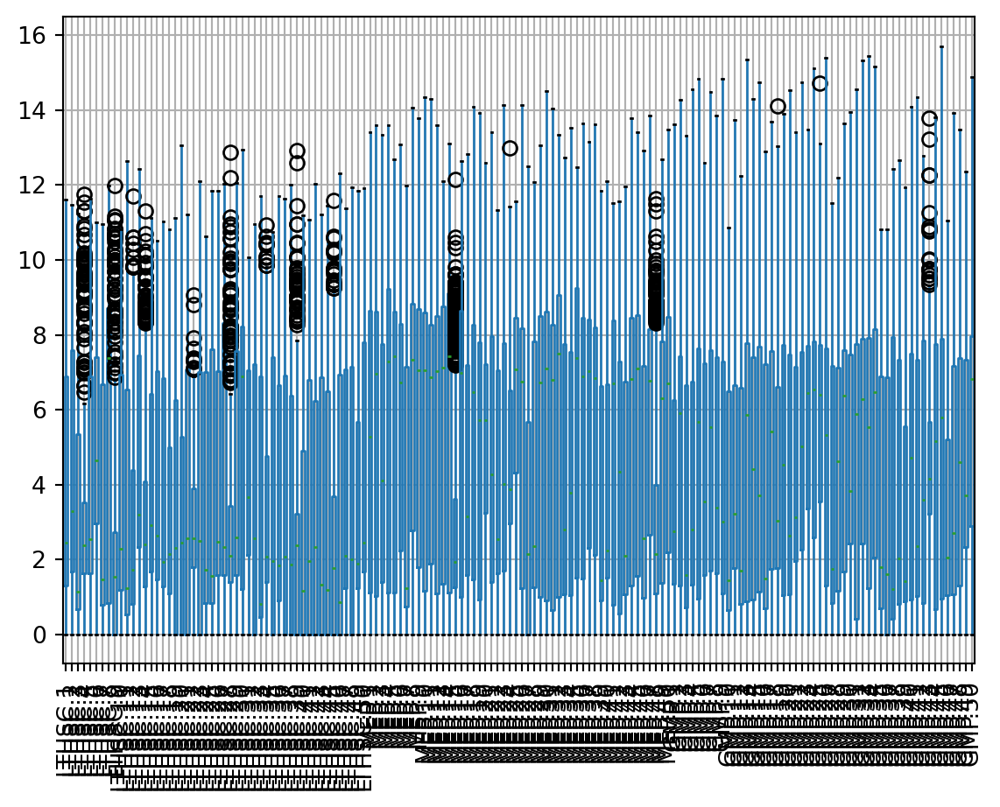
After:
hspc_zs.boxplot(rot=90) # rot=90 rotates x-axis labels
plt.show()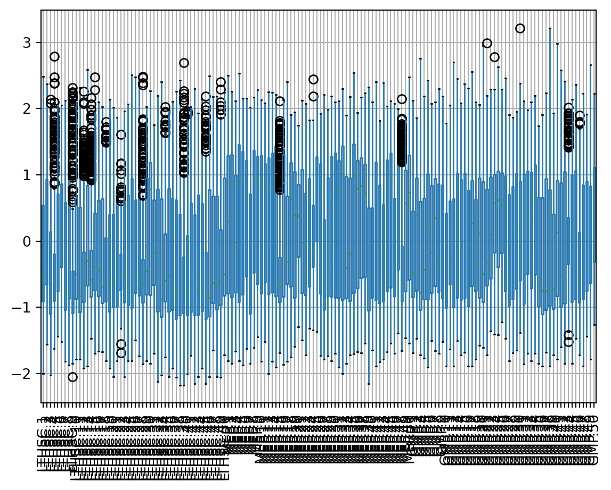
Clustering
All the steps before have been leading to this, clustering the data and making heatmaps - a staple method in bioinformatics.
Clustering is one of the most common visualisation techniques for genes expression data. Here we will learn how to do some basic histograms/heatmaps and plotting. To do this we need to bring in the scipy library which is a library for engineering, maths, and stats. In this case we are going to pull in the cluster package and within, the hierarchy module.
import scipy.cluster.hierarchy as sch
linkage_matrix = sch.linkage(hspc_zs, method='ward',metric='euclidean')
# Create the dendrogram
plt.figure(figsize=(10, 6))
sch.dendrogram(linkage_matrix, labels=hspc_var.index.tolist(), leaf_rotation=90)
plt.title("Dendrogram of Rows (hspc_var)")
plt.xlabel("Sample")
plt.ylabel("Distance")
plt.tight_layout()
plt.show()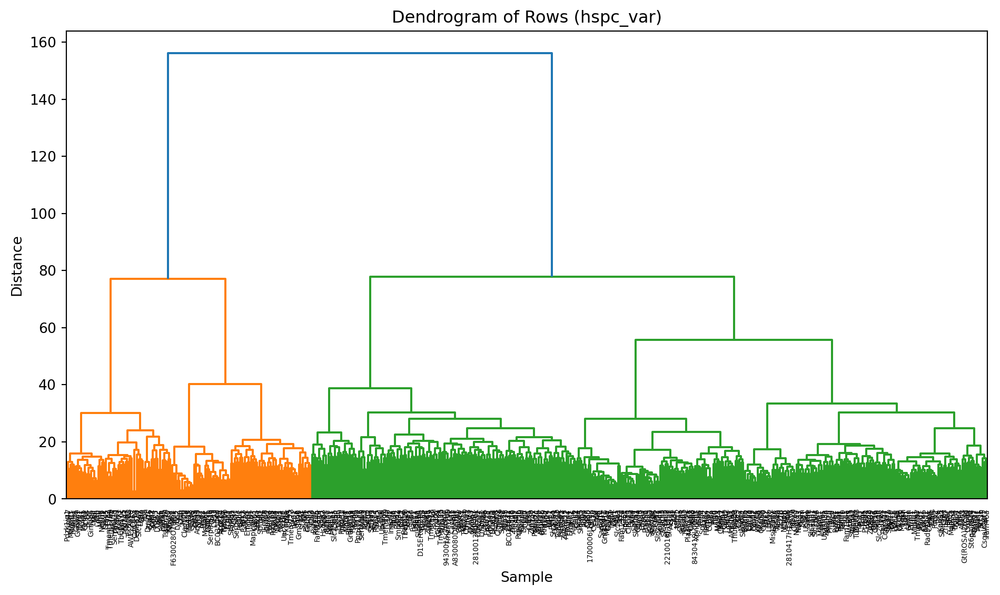
import scipy.spatial.distance as ssd
dist_matrix = ssd.pdist(hspc_zs, metric='euclidean')
# Step 2: Hierarchical clustering (like R's hclust)
linkage_matrix = sch.linkage(dist_matrix, method='ward') # or "ward", "average", etc.
# Step 3: Plot dendrogram (like R's plot)
plt.figure(figsize=(10, 6))
sch.dendrogram(linkage_matrix, labels=hspc_zs.index.tolist(), leaf_rotation=90)
plt.title("Hierarchical Clustering of Genes")
plt.xlabel("Genes")
plt.ylabel("Distance")
plt.tight_layout()
plt.show()
#lo = sch.dendrogram(linkage_matrix)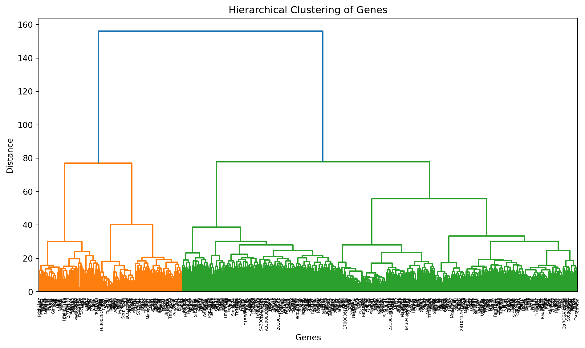
import scipy.spatial.distance as ssd
dist_matrix = ssd.pdist(hspc_var, metric='correlation')
# Step 2: Hierarchical clustering (like R's hclust)
linkage_matrix = sch.linkage(dist_matrix, method='ward') # or "ward", "average", etc.
# Step 3: Plot dendrogram (like R's plot)
plt.figure(figsize=(10, 6))
sch.dendrogram(linkage_matrix, labels=hspc_zs.index.tolist(), leaf_rotation=90)
plt.title("Hierarchical Clustering of Genes")
plt.xlabel("Genes")
plt.ylabel("Distance")
plt.tight_layout()
plt.show()
#lo = sch.dendrogram(linkage_matrix)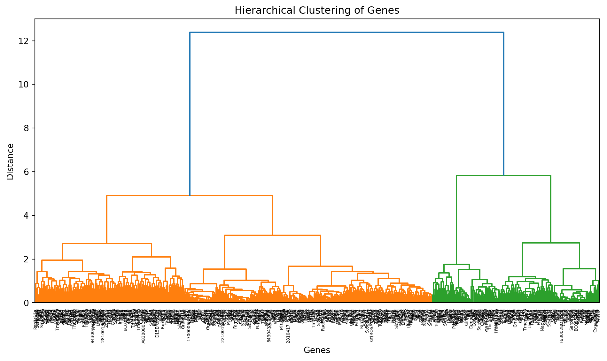
Let say we want to cluster the samples(columns) instead? What should we do?
Reveal solution
import scipy.cluster.hierarchy as sch
sample_linkage_matrix = sch.linkage(hspc_zs.T, method='ward',metric='euclidean')
# Create the dendrogram
plt.figure(figsize=(10, 6))
sch.dendrogram(sample_linkage_matrix, labels=hspc_var.T.index.tolist(), leaf_rotation=90)
plt.title("Dendrogram of Samples (hspc_var)")
plt.xlabel("Sample")
plt.ylabel("Distance")
plt.tight_layout()
plt.show()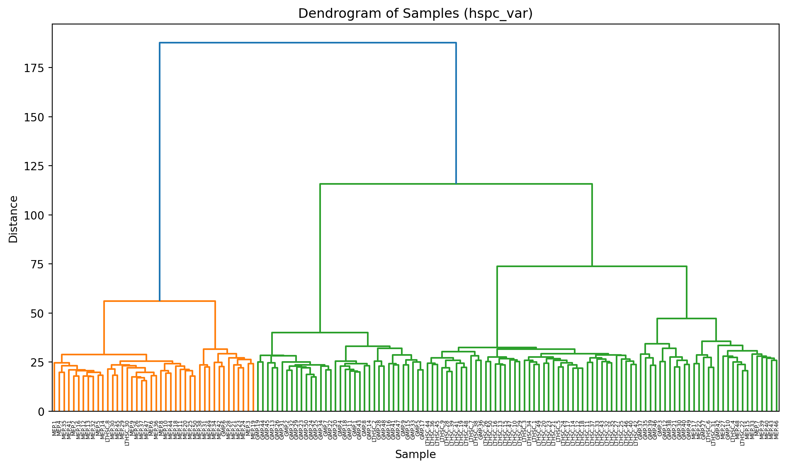
Heatmaps
Heatmaps have been the go-to method for visualising gene expression data. We can make one from first principles using the work we have done above. Lets take a look at the contents of what is returned by sch.dendrogram.
Lets run these lines again, but this time saving the output from each call to cluster the data:
gene_linkage_matrix = sch.linkage(hspc_zs, method='ward',metric='euclidean')
genes_hc = sch.dendrogram(gene_linkage_matrix, labels=hspc_var.index.tolist(),no_plot=True)#, leaf_rotation=90)
sample_linkage_matrix = sch.linkage(hspc_zs.T, method='ward',metric='euclidean')
samples_hc = sch.dendrogram(sample_linkage_matrix, labels=hspc_var.T.index.tolist(),no_plot=True)#, leaf_rotation=90)*Exercise: What kind of object is genes_hc? Check it, and then get a list of what genes_hc contains.
Reveal solution
type(genes_hc)
genes_hc.keys()dict_keys(['icoord', 'dcoord', 'ivl', 'leaves', 'color_list', 'leaves_color_list'])At th
plt.imshow(hspc_zs, aspect='auto', cmap='viridis')
plt.show()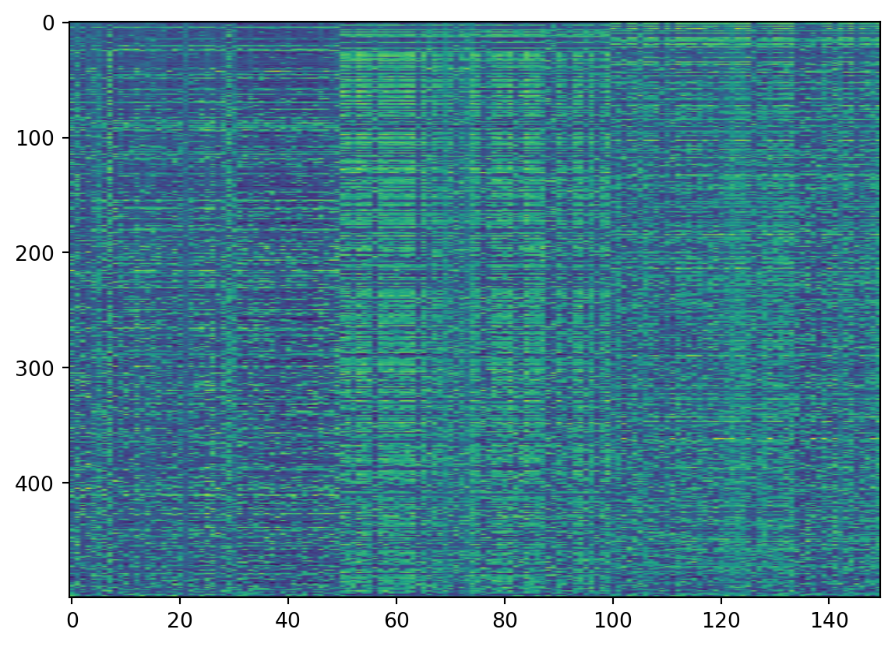
We can how ordered the rows according to ivl
hspc_ordered = hspc_zs.loc[genes_hc["ivl"]]Replot the heatmap:
plt.imshow(hspc_ordered, aspect='auto', cmap='viridis')
plt.show()
Looking better right? One more step and we will have clustered columns:
hspc_ordered = hspc_zs.loc[genes_hc["ivl"],samples_hc["ivl"]]And plot again:
plt.imshow(hspc_ordered, aspect='auto', cmap='viridis')
plt.show()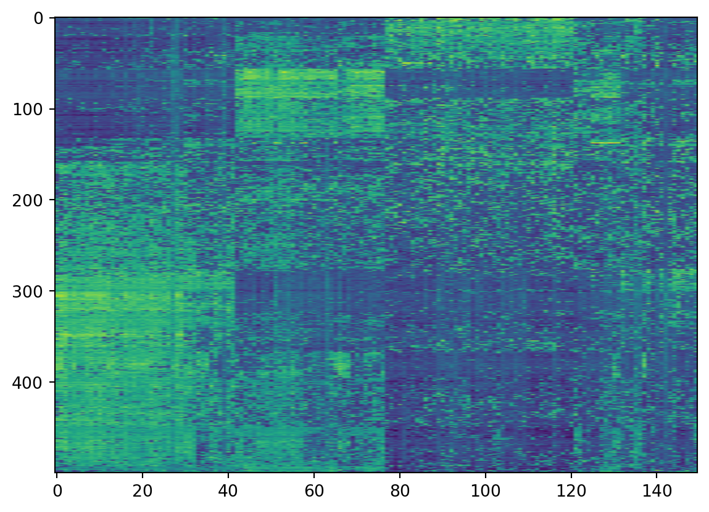
To make a heatap using seaborn:
import seaborn as sns
sns.heatmap(hspc_ordered, cmap='magma') # Optional: cbar=True, xticklabels=False, yticklabels=False
plt.title('Heatmap of Data')
plt.show()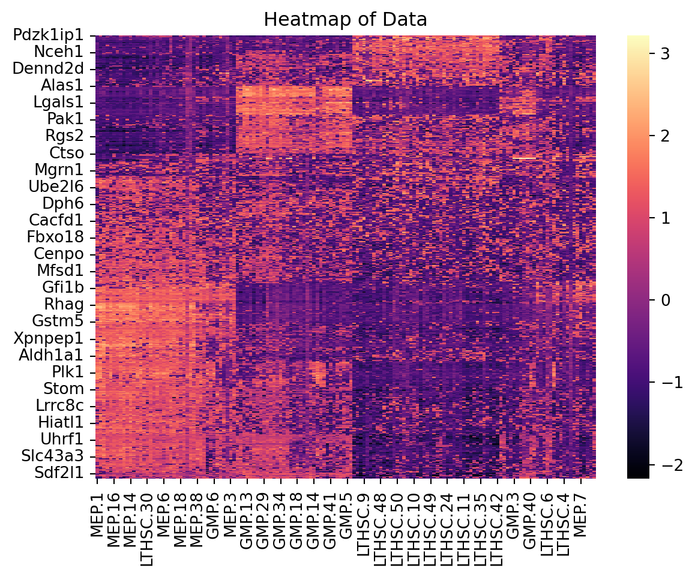
We can do a lot of this in one shot using the clustermap function where the clustering and plotting is done in one go:
sns.clustermap(hspc_var, method='ward', metric='euclidean', cmap='magma', z_score=0)
plt.show()/home/shamit/anaconda3/envs/quarto.env/lib/python3.10/site-packages/seaborn/matrix.py:560: UserWarning: Clustering large matrix with scipy. Installing `fastcluster` may give better performance.
/home/shamit/anaconda3/envs/quarto.env/lib/python3.10/site-packages/seaborn/matrix.py:560: UserWarning: Clustering large matrix with scipy. Installing `fastcluster` may give better performance.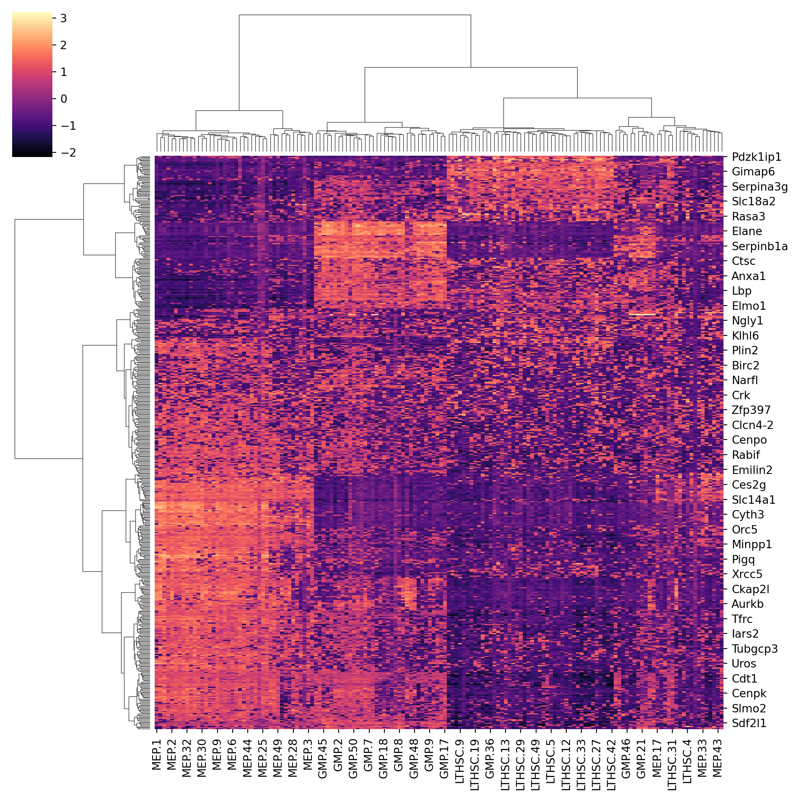
To save the plot do:
hspc_clus = sns.clustermap(hspc_var, method='ward', metric='euclidean', cmap='magma', z_score=0)
hspc_clus.fig.savefig("clustermap.png")/home/shamit/anaconda3/envs/quarto.env/lib/python3.10/site-packages/seaborn/matrix.py:560: UserWarning: Clustering large matrix with scipy. Installing `fastcluster` may give better performance.
/home/shamit/anaconda3/envs/quarto.env/lib/python3.10/site-packages/seaborn/matrix.py:560: UserWarning: Clustering large matrix with scipy. Installing `fastcluster` may give better performance.We can see from the heatmap that he genes broadly fall into 5 clusters, and it would be good to know which genes are in which cluster. To do this we need to probe the output of hspc_clus to get to that information.
dir(hspc_clus)
gene_clusters_k5 = sch.fcluster(hspc_clus.dendrogram_row.linkage,t=5, criterion='maxclust')Now we have an array of cluster assignments, we can add this as a colour bar:
row_colors = pd.Series(gene_clusters_k5, index=hspc_var.index, name="cluster")
unique_clusters = sorted(row_colors.unique())
palette = sns.color_palette("tab10", n_colors=len(unique_clusters))
lut = dict(zip(unique_clusters, palette))
row_colors_mapped = row_colors.map(lut)sns.clustermap(
hspc_var,
method='ward',
metric='euclidean',
cmap='magma',
z_score=0,
row_colors=row_colors_mapped
)
plt.show()/home/shamit/anaconda3/envs/quarto.env/lib/python3.10/site-packages/seaborn/matrix.py:560: UserWarning: Clustering large matrix with scipy. Installing `fastcluster` may give better performance.
/home/shamit/anaconda3/envs/quarto.env/lib/python3.10/site-packages/seaborn/matrix.py:560: UserWarning: Clustering large matrix with scipy. Installing `fastcluster` may give better performance.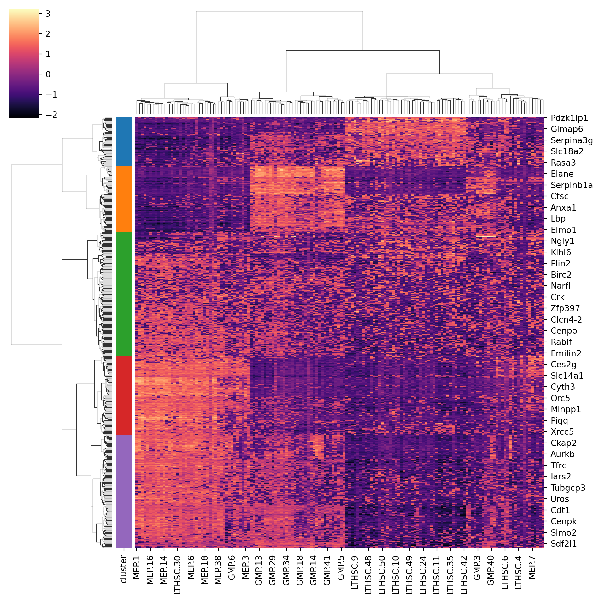
We can also count up how many genes we have in each cluster:
counts= pd.Series(gene_clusters_k5).value_counts().sort_index()counts.plot(kind='bar')
plt.show()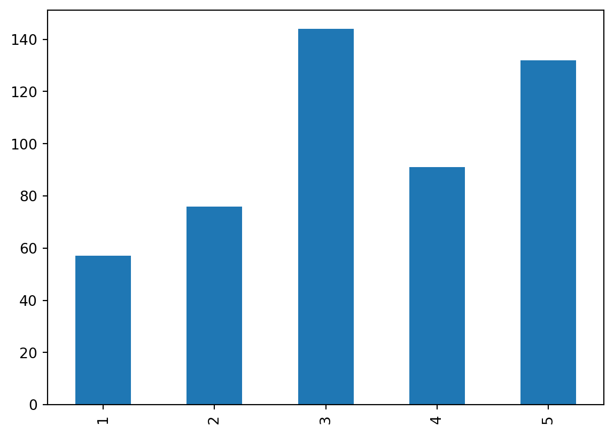
Linear models
Fitting a linear model (or linear regression) is also another fairly common thing to do, and actually forms the basis of some of the more famous packages we use such as DESeq2, limma etc. Let’s use our expression data to demonstrate this.
In our case we have 3 different samples:
hspc_data.columnsIndex(['LTHSC.1', 'LTHSC.2', 'LTHSC.3', 'LTHSC.4', 'LTHSC.5', 'LTHSC.6',
'LTHSC.7', 'LTHSC.8', 'LTHSC.9', 'LTHSC.10',
...
'GMP.41', 'GMP.42', 'GMP.43', 'GMP.44', 'GMP.45', 'GMP.46', 'GMP.47',
'GMP.48', 'GMP.49', 'GMP.50'],
dtype='object', length=150)But what we need to do is make a vector where the .X has been clipped off to make a vector of three groups. We do this by:
groups = pd.Series(hspc_data.columns).str.replace(r"\..*", "", regex=True)
print(groups.tolist()) # ['stem', 'stem', 'prog', 'prog']['LTHSC', 'LTHSC', 'LTHSC', 'LTHSC', 'LTHSC', 'LTHSC', 'LTHSC', 'LTHSC', 'LTHSC', 'LTHSC', 'LTHSC', 'LTHSC', 'LTHSC', 'LTHSC', 'LTHSC', 'LTHSC', 'LTHSC', 'LTHSC', 'LTHSC', 'LTHSC', 'LTHSC', 'LTHSC', 'LTHSC', 'LTHSC', 'LTHSC', 'LTHSC', 'LTHSC', 'LTHSC', 'LTHSC', 'LTHSC', 'LTHSC', 'LTHSC', 'LTHSC', 'LTHSC', 'LTHSC', 'LTHSC', 'LTHSC', 'LTHSC', 'LTHSC', 'LTHSC', 'LTHSC', 'LTHSC', 'LTHSC', 'LTHSC', 'LTHSC', 'LTHSC', 'LTHSC', 'LTHSC', 'LTHSC', 'LTHSC', 'MEP', 'MEP', 'MEP', 'MEP', 'MEP', 'MEP', 'MEP', 'MEP', 'MEP', 'MEP', 'MEP', 'MEP', 'MEP', 'MEP', 'MEP', 'MEP', 'MEP', 'MEP', 'MEP', 'MEP', 'MEP', 'MEP', 'MEP', 'MEP', 'MEP', 'MEP', 'MEP', 'MEP', 'MEP', 'MEP', 'MEP', 'MEP', 'MEP', 'MEP', 'MEP', 'MEP', 'MEP', 'MEP', 'MEP', 'MEP', 'MEP', 'MEP', 'MEP', 'MEP', 'MEP', 'MEP', 'MEP', 'MEP', 'MEP', 'MEP', 'GMP', 'GMP', 'GMP', 'GMP', 'GMP', 'GMP', 'GMP', 'GMP', 'GMP', 'GMP', 'GMP', 'GMP', 'GMP', 'GMP', 'GMP', 'GMP', 'GMP', 'GMP', 'GMP', 'GMP', 'GMP', 'GMP', 'GMP', 'GMP', 'GMP', 'GMP', 'GMP', 'GMP', 'GMP', 'GMP', 'GMP', 'GMP', 'GMP', 'GMP', 'GMP', 'GMP', 'GMP', 'GMP', 'GMP', 'GMP', 'GMP', 'GMP', 'GMP', 'GMP', 'GMP', 'GMP', 'GMP', 'GMP', 'GMP', 'GMP']We can now make a linear model for the first gene from this array of groups:
import statsmodels.api as sm
import statsmodels.formula.api as smf
df = pd.DataFrame({
'expression': hspc_data.iloc[0].values,
'group': groups.values
})
# 2. Fit the model
model = smf.ols('expression ~ group', data=df).fit()…and run the ANOVA:
anova_table = sm.stats.anova_lm(model, typ=2)
print(anova_table) sum_sq df F PR(>F)
group 26.442809 2.0 1.500594 0.226393
Residual 1295.184848 147.0 NaN NaNp_value = anova_table["PR(>F)"]["group"]
print(p_value)0.22639342020278108Exercise: Make a function called do_anova which takes a vector vand a vector groups, performs linear modelling and ANOVA and returns just the p-value.
def do_anova(vals,grps):
df = pd.DataFrame({
'expression': vals,
'group': grps
})
mod = smf.ols('expression ~ group', data=df).fit()
anova_table = sm.stats.anova_lm(mod, typ=2)
p_value = anova_table["PR(>F)"]["group"]
return p_valuedo_anova(hspc_data.iloc[0].values,groups)np.float64(0.22639342020278108)We can now apply this to all rows of our data in one shot!
hspc_pvals = hspc_data.apply(lambda row: do_anova(row.values, groups), axis=1)We need to correct the p-values! We usually do this using Benjamini-Hochberg correction:
import scipy.stats as ss
hspc_pcor = ss.false_discovery_control(hspc_pvals)
p_cors_df = pd.DataFrame({
'pvals': hspc_pcor,
})
p_cors_df.index = hspc_data.indexThen we can pull out the significant genes using a conditional:
sig_genes = p_cors_df.index[p_cors_df['pvals'] < 0.001]Get the genes from the main matrix:
sig_data = hspc_data.loc[sig_genes]And heatmap them!
sns.clustermap(
sig_data,
method='ward',
metric='euclidean',
cmap='magma',
z_score=0)
plt.show()/home/shamit/anaconda3/envs/quarto.env/lib/python3.10/site-packages/seaborn/matrix.py:560: UserWarning: Clustering large matrix with scipy. Installing `fastcluster` may give better performance.
/home/shamit/anaconda3/envs/quarto.env/lib/python3.10/site-packages/seaborn/matrix.py:560: UserWarning: Clustering large matrix with scipy. Installing `fastcluster` may give better performance.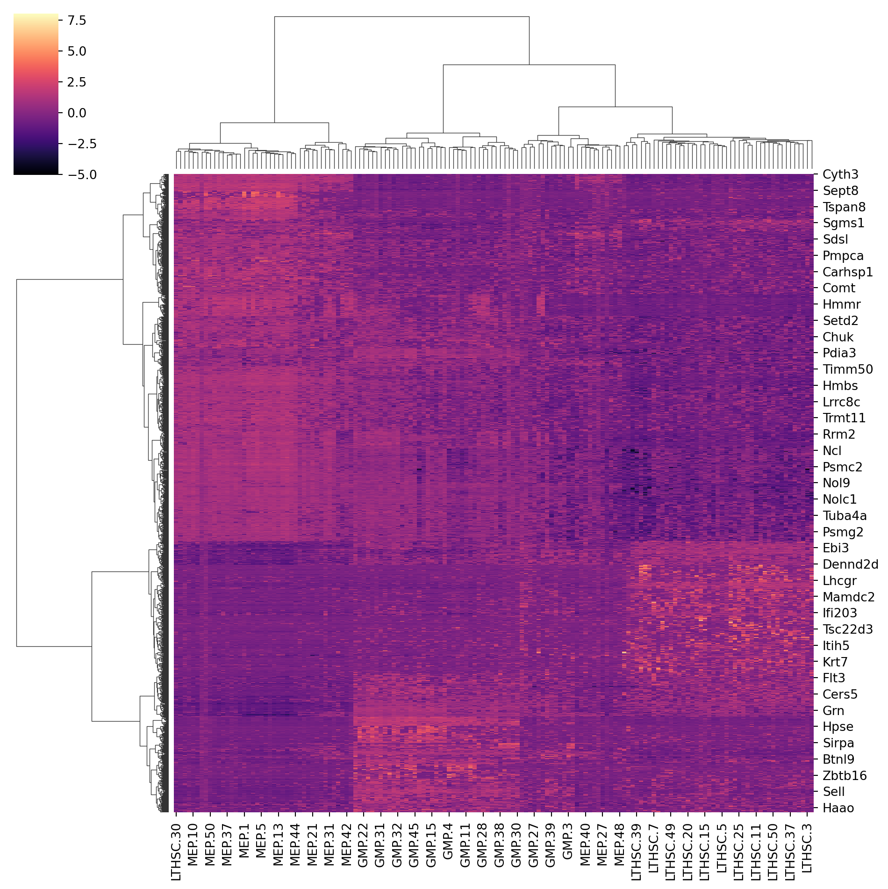
Kmeans
We’re going to program our first algorithm together! Kmeans clustering is a common way to cluster expression data, and the algorithm is actually pretty simple, and a great way to learn how to think programmatically. The data we’ll use comes from yeast where the expression of 256 genes have been measured as a synchronised population go through two divisions. It’s a nice small dataset with clear clusters.
There is a file called Spellman_Yeast_Cell_Cycle.tsv. Load it into an object called ycc.
ycc = pd.read_csv("Spellman_Yeast_Cell_Cycle.tsv", sep="\t", header=0, index_col=0)
ycc_np = ycc.valuesran = np.random.choice(np.arange(6), size=150, replace=True)The data has already been z-scored, so we need to learn how to calculate the Euclidean distance between 2 genes (\(g^{i}\) and \(g^{j}\)) (vector). We do this using the formula:
\[d_{ij}=\sqrt{\sum{(g^{i}_t-g^{j}_t)^2}}\]
Write a function called e_dist which takes two vectors v1 and v2 and calculates the distance between them. In our data, these two vectors (v1 and v2) are the different expression values of two genes through the different time points measured in the yeast cell cycle .
Reveal solution
import math
def e_dist(v1,v2):
d = math.sqrt(pow(sum((v1-v2)),2))
return dThe kmeans algorithm needs the user to say how many clusters are being searched for, so in this case we’ll say 8.
- Pick 8 genes (rows) at random to act as our initial centroids.
- Calculate the distance between each gene to each of the 8 centroids.
- Assign each gene to its closest centroid.
- For each of the 8 clusters, calculate a new centroid.
- Repeat 100 times steps 2, 3, and 4.
- We’ll now work through this problem together and crowd source a solution.
Reveal solution
K=8
iter=100
ran = np.random.choice(np.arange(ycc_np.shape[0]), size=8, replace=False)
print(ran)
centroids = ycc_np[ran,:]
centroids
clusters=None
dists = np.zeros((ycc_np.shape[0],K))
for i in range(iter):
for gene in range(ycc_np.shape[0]):
for k in range(K):
dists[gene,k] = e_dist(ycc_np[gene,:],centroids[k,:])
clusters = np.argmin(dists, axis=1)
for nc in range(K):
centroids[nc,:] = np.mean(ycc_np[clusters==nc,:],axis=0)[255 146 93 105 213 205 212 204]fig, axes = plt.subplots(2, 4, figsize=(16, 8))
axes = axes.flatten()
for k in range(8):
ax = axes[k]
ycc_c = ycc_np[clusters == k, :] # rows in cluster k
if ycc_c.shape[0] == 0:
continue # skip if no rows
# Plot the first row
ax.plot(ycc_c[0], color='black', alpha=0.5)
# Overlay the rest
for i in range(ycc_c.shape[0]):
ax.plot(ycc_c[i], color='black', alpha=0.3)
ax.set_title(f"Cluster {k}")
ax.set_ylim(ycc_np.min(), ycc_np.max())
plt.tight_layout()
plt.show()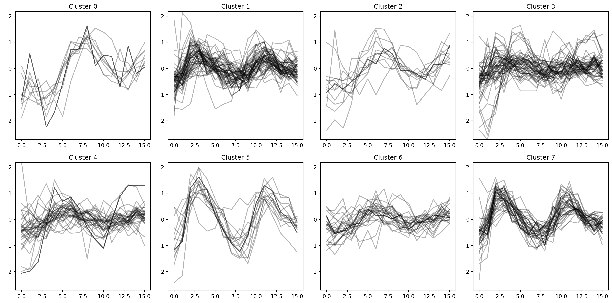
# Assume ycc and clusters already exist
n_samples, n_timepoints = ycc.shape
timepoints = np.arange(n_timepoints)
# Create a DataFrame from ycc
ycc_df = pd.DataFrame(ycc)
ycc_df['cluster'] = clusters
# Melt the DataFrame to long format
long_df = ycc_df.reset_index().melt(id_vars=['index', 'cluster'],
var_name='time', value_name='value')
long_df.rename(columns={'index': 'sample'}, inplace=True)
long_df['time'] = long_df['time'].str.extract(r'(\d+)').astype(int) # make sure time is numeric
# Plot with seaborn FacetGrid
g = sns.FacetGrid(long_df, col='cluster', col_wrap=4, sharey=True, height=3)
g.map_dataframe(sns.lineplot, x='time', y='value', alpha=0.3, legend=False)
g.set_titles("Cluster {col_name}")
g.set_axis_labels("Time", "Value")
plt.tight_layout()
plt.show()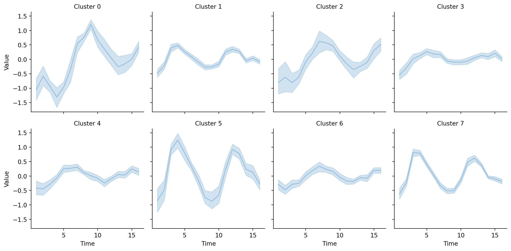
The Final Project
Your final project is going to combine everything you have learned over the last few days to tackle a final project you will do in your own time over the next X weeks. It will be along the same lines the Kmeans clustering we just did, but this time we’re going to cluster the data using the Metropolis-Hastings algorithm. This is a simulated annealing process, so we need to learn how that works first.
Optimisation problems
Programming an optimisation problem is a great way of learning how to code. In this case we are going to tackle a minimisation problem. We can think of well clustered data having low energy, in that, each cluster is tight and has little within cluster variance. If we calculate the variance within each cluster, and sum over all clusters, we get the total variance (energy) of the system. Lets go back to the equation we know that measures the distance between two genes \(i\) and \(j\) over \(t\) timepoints:
\[d_{ij}=\sqrt{\sum{(g^{i}_t-g^{j}_t)^2}}\]
To measure the compactness of a clustering, we sum the pairwise distances for each cluster \(K\), then sum over all \(K\)s and them divide by \(K\).
\[ E(K)=\frac{1}{K}\sum^K_{k=1} \left[ \sum_{i\epsilon Ck}\sum_{j\epsilon Ck} d_{ij}\right] \]
For a well clustered data, \(E(K)\) should be as small as possible. Lets say we have 1000 genes, and we want to partition them into 10 clusters. The number of combinations is too high for us to try each one to brute force a true \(E\). This is why we use a heuristic algorithm to get us as close to the solution as possible in a smaller amount of time.
If we tried to visualise the energy landscape we can imagine it might look something like this:
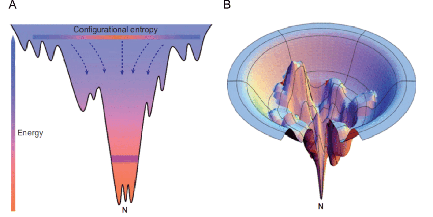
The first thing you need to do is rescale each gene (row) of the data so the smallest value is given 0, and the highest value is given 1.
Lets go through the process of the algorithm. To do this you need 4 parameters:
- The temperature of the system \(Temp\)
- Cooling factor \(cool\)
- Number of clusters \(K\)
- How many iterations to perform \(I\).
Algorithm goes:
Randomly assign each gene to one of your K clusters.
for each iteration \(I\) {
Calculate \(E\). Call this \(E_{old}\)
Randomly select a single gene and assign it randomly to another cluster.
Calculate \(E_{new}\)
if(\(E_{new}\) < \(E_{old}\)) {accept the move}
if(\(E_{new} > E_{old})\) {if(\(e^{-\frac{E_{new}-E_{old}}{Temp}} > R(0,1)\)) {accept the move} }
else{reject the move}
Set a new \(Temp\) by doing \(Temp=Temp \times cool\) }
Done
\(R(0,1)\) is a randomly generated number from a uniform distribution that lies between 0 and 1.
Things to do
- Code this algorithm using the same yeast timecourse data.
- Put this algorithm into a function.
- When running the function, make sure the starting \(E_{start}\) and final \(E_{final}\) are printed to the screen.
Tip
Try and break the problem up into functions which can be called when needed. It will be easier to write the main algorithm.
Why this exercise is a good one
By tackling a more difficult problem the idea is that you will dig deeper into the language and really understand how things work in the background of the functions you use in packages such as Seurat etc.
Are there libraries in Python to do this?
Yes there are, but you won’t learn anything by using them which is why we are coding this “by hand”.
A little inspiration